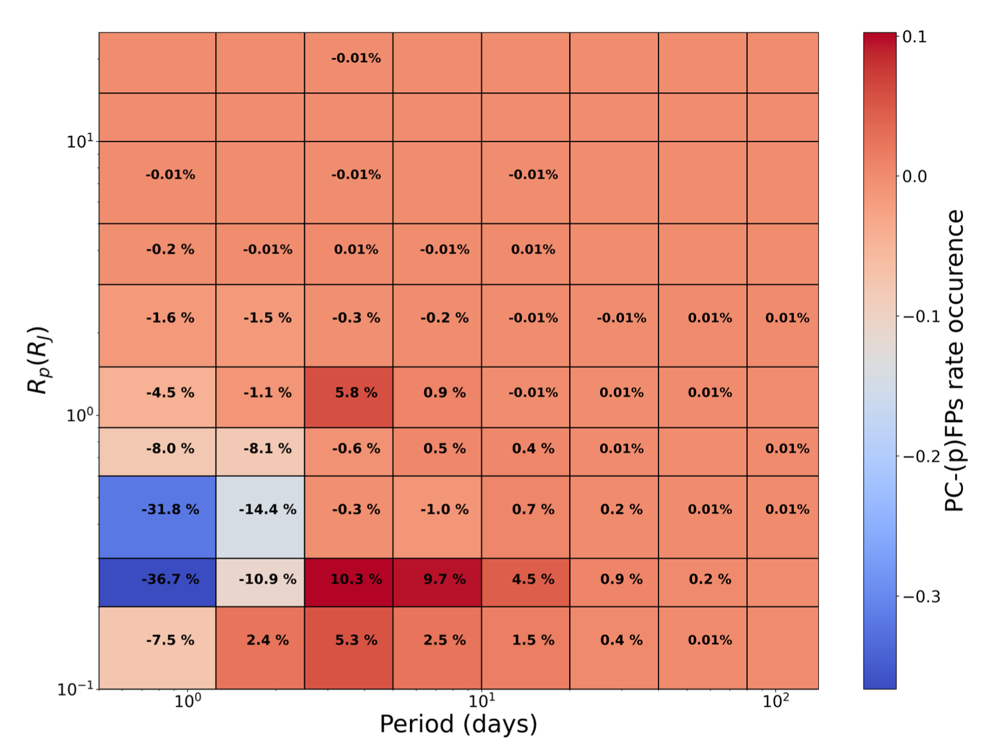
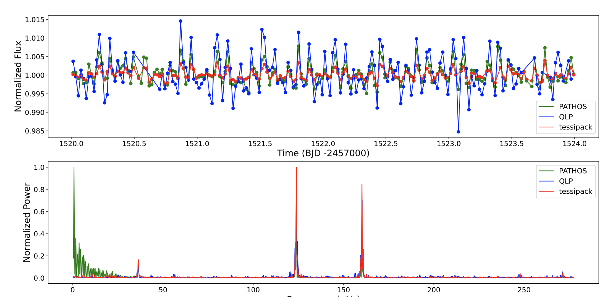
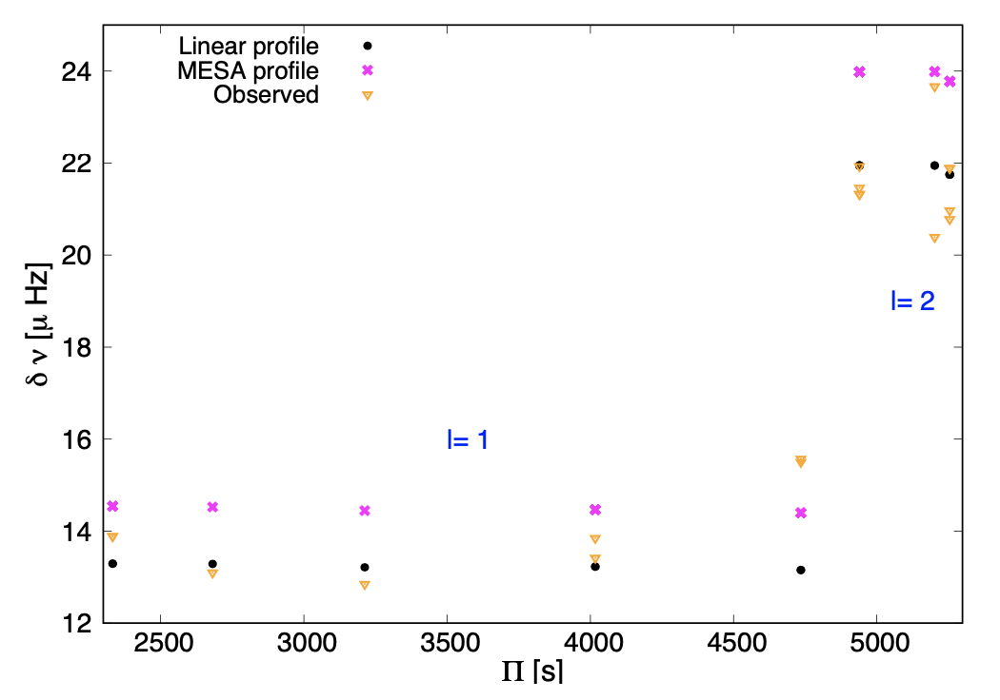

Welcome TESS followers to our latest news bulletin! This week, we are looking at three recent papers from the archive. Enjoy!
The TESS Triple-9 Catalog II: a new set of 999 uniformly-vetted exoplanet candidates (Magliano et al. 2023) :
Citizen science increases public engagement in cutting-edge exoplanet research, promotes science education and appreciation, and accelerates scientific data analysis. A key area where volunteers provide vital contribution to the field of exoplanets is vetting. Vetting is the process of ruling out potential false positive scenarios that can mimic planetary signals caused by e.g. variable stars, eclipsing binary systems, instrument artifacts. Magliano et al. (2023) present a new catalog of uniformly-vetted exoplanet candidates discovered in TESS data. The authors perform a comprehensive analysis of 999 TESS Objects of Interest (TOIs) by combining the automated vetting pipeline DAVE with the power of citizen science as represented by the Planet Patrol project. The authors test for common sources of false positives such as photocenter offset during transits, presence of secondary eclipses, odd-even differences between consecutive transits, lightcurve modulations synchronized with the orbital period, nearby bright field stars, etc. Magliano et al. (2023) also developed an automated disposition generator designed to quantitatively assess human inspection and analysis. Of the 999 TOIs, the authors identify 752 genuine planet candidates, 142 false positives, and 105 as potential false positives. This work highlights the exoplanet discovery capability of TESS and provides a set of benchmark TOIs appropriate for follow-up confirmation efforts.
Asteroseismic age constraints on the open cluster NGC 2477 using oscillating stars identified with TESS FFI (Palakkatharappil & Creevey 2023) :
A star's age is one of the fundamental properties underlying our understanding of stellar astrophysics. Deriving precise stellar ages is challenging, and typically relies on isochrone fitting or asteroseismic measurements. The two methods can be combined by examining pulsating stars in open clusters where the stars are assumed to be of the same age. Palakkatharappil & Creevey (2023) present a detailed study of stellar pulsations in NGC 2477 using TESS photometry, spectroscopic observations, Gaia data, and extinction maps. NGC 2477 is an intermediate-age (previous estimates ranging between 0.7 and 1.5 Ga) open cluster in the Puppis constellation with a differential reddening E(B-V) ~ 0.2-0.4 mag, mean radial velocity of ~7.3 km/sec, distance of ~1,200-1,500 pc, and an estimated metallicity between -0.24 and 0.18. TESS observed NGC 2477 in Sectors 7, 8, 34, and 35 in Full-Frame Image mode. Palakkatharappil & Creevey (2023) examined 2039 cluster members and used Lomb-Scargle periodogram analysis to detect 185 oscillating stars and 13 binaries. Given the high stellar density of NGC 2477, especially towards the center, the authors considered only 16 oscillating stars where the contamination is low. Combining TESS data with theoretical models, the authors were able to estimate an age of 1.0+/-0.1 Ga, E(B-V) = 0.29+/-0.05, metallicity of 0.1+/-0.05 dex, and a distance of 1444+/-81 pc.
Exploring the internal rotation of the extremely low-mass He-core white dwarf GD 278 with TESS asteroseismology (Calcaferro et al. 2023) :
Low-mass stars in a close binary system may evolve into extremely low-mass (ELM) He-core white dwarfs due to extensive mass loss. ELMs have typical masses of M < 0.18-0.2 MSun, can exhibit complex brightness variations, and their progenitors may experience multiple H-shell flashes. Calcaferro et al. (2023) present the first asteroseismological analysis of GD 278, a pulsating ELM white dwarf, and probe its internal rotation based on the measured rotational splittings. GD 278 resides in a single-lined spectroscopic binary with an orbital period of 4.61 hours, has a mass of M = 0.191 MSun, effective temperature of Teff = 9230 K, gravity of log(g) = 6.627, and pulsates with periods ranging from 2290 to 6730 sec. The authors combine TESS data with observations from the Otto Struve telescope, LPCODE and MESA stellar evolutionary models to compare the observed rotational frequency splittings to the theoretical expectations, assuming a rigid body rotational profile. Calcaferro et al. (2023) find that the asteroseismological profile of GD 278 is consistent with rigid-body rotation, and the derived rotation period is typical for white dwarfs and pre-white dwarfs. Rotation in ELMs has been proposed as a potential explanation for the observed pulsations in pre-ELM white dwarfs, and for the observed surface composition of ELMs containing heavy metals. TESS data helped the authors test the theoretical predictions for the frequency splittings.

Fig. 1: Taken from Magliano et al. (2023). Orbital period and planet radius as a function of the difference between planet candidates and false positives occurrence rate for 1998 uniformly-vetted TESS Objects of Interest. The false positives and potential false positives dominate at periods shorter than 4 days, overlapping with the Hot Neptune desert.

Fig. 2: Taken from Palakkatharappil et al. (2023). TESS Full-Frame Image photometry of variable star N77-135 (member of NGC 2477) (upper panel), and corresponding periodogram (lower panel).

Fig. 3: Taken from Calcaferro et al. (2023). Observed frequency splittings for the extremely low-mass He-core white dwarf GD 278 (orange triangle symbols) compared to the best-fit linear differential rotation profile (black dots) and theoretical predictions based on a MESA code rotation profile (magenta crosses).